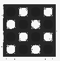

metadoc.examples
Attach unit examples to your vars.
Unit examples are small executable code snippets, images, urls or any data which can illustrate usage of your functions. Term “unit” means that example should be connected directly to given function.
Usage
There are several types of examples (macro - type - description):
- example -
:simple- simple executable code, can be converted to test - example-session -
:session- list of executable code lines - example-image -
:image- image url - example-url -
:url- just any url - example-snippet -
:snippet- define function which is passed to snippet. Result of snippet call is result of such example. Result can be interpreted as other example type. See below for concrete snippet call. Snippets are created with defsnippet macro.
Example is just a map with following fields:
:type- type of example:example- formatted code(s) as a text or just text (for example-url and example-image):example-fn- code(s) as functions (code is evaluated during documentation creation phase):test-value- if you want to convert your:simpleexample to test this field keeps expected value (test is run during evaluation phase):snippet-name- only for:snippettype, name of the snippet function created with defsnippet macro.:dispatch-result- only for:snippettype, how to treat result of example evaluation
Adding examples
You can add examples directly to your metadata under :examples tag as a list of (example...) macro calls.
(defn some-function
{:metadoc/examples [(example "Simple" (+ 1 2 3))]}
[])
Or call add-examples macro, pass variable name and examples.
(add-examples some-function
(example "Another example" (some-function 1 2 3)))
Snippets
Sometimes you want to show your example as simple function which should be evaluated by other, more complicated code. Eg. you want to generate some math function plots, calculate something or process data. And you want to reuse such code several times in you example.
(defsnippet my-snippet "Description" (f 1 2))
(example-snippet "Use snippet to sum something" my-snippet +) ;;=> 3
(example-snippet "Use snippet to multiply somenting" my-snippet *) ;;=> 2
defsnippet creates private function which accepts function (code from your example will be passed) and opts list which currently contains one element, md5-hash of example code.
Details
- Each example code is wrapped in the function which has an access to
md5-hashvalue. It’s a hash of formatted example string. - Snippet can be marked as
:hiddenif you don’t want to show it in documentation. - Result of snippet can be changed to other example type, this way you can easily convert result to image or url.
Evaluation
Evaluate given example based on type.
evaluate function is multimethod with dispatch on example type. When you create your own example macro you need also create corresponding evaluation function.
Rendering
Render to given format.
Call multimethod format-example with format type as a dispatch. Currently supported are:
:html:markdown(not implemented yet):text(not implemented yet)
Each formatting function is also multimethod format-... with dispatch on example type.
Again, if you want to write different formatter - just add corresponding multimethods.
Categories
- Example macros: add-examples defsnippet example example-any-val example-image example-session example-snippet example-url
- Helper functions: format-form md5 meta-add-to-key meta-append-to-vector
Without category: *format-width* evaluate format-example format-html format-markdown format-text ignore-me
Constants
- default-format-width =
72
Code snippets
optsparameter and call provided functionfwith random number. See example-snippet for results.
(defn snippet-fn [f & opts] (do (println opts) (f (rand-int 10))))add-examples
macro
(add-examples v & examples)Add list of examples to given var.
Usage:
(add-examples any-var
(example "one" form-1)
(example "two" form-2)
(example-image "image" "aaa.jpg"))
defsnippet
macro
(defsnippet name description hidden? snippet)(defsnippet name description snippet)Create snippet function. Snippet is used as a function which is called during evaluation of example-snippet code. Example code is passed to snippet.
Result from snippet can be treated as result of any example type (:simple as default).
When you set hidden? parameter to true. Doc generation tool should skip it.
evaluate
multimethod
Evaluate example. Dispatch on example type.
Returns example itself with added :result value.
When example contain test, execute test and store result under :test key. :tested key is set to true.
As default, evaluation returns example as a String itself.
example
macro
(example description {:keys [evaluate? test-value], :or {evaluate? true, test-value nil}} example)(example description example)Create :simple example.
Optional parameters:
:evaluate?- evaluate code or not (default:true):test-value- run test if:test-valueis not nil (default:nil)
Your code has an access to md5-hash value, which is unique String for each form.
Examples
Simple code.
(+ 1 2)
;;=> 3Do not evaluate.
(+ 3 4)Test!
(* 10 10)
;;=> 100
;; Test: ok.Access to md5-hash.
(str "My md5 is: " md5-hash)
;;=> My md5 is: 036701fecdc4f17f752110ad6bec31c5
;; Test: ok.How do I look inside?
(example "Access to md5-hash."
{:test-value "My md5 is: 036701fecdc4f17f752110ad6bec31c5"}
(str "My md5 is: " md5-hash))
;;=> {:doc "Access to md5-hash.",
;;=> :example "(str \"My md5 is: \" md5-hash)",
;;=> :example-fn #,
;;=> :test-value "My md5 is: 036701fecdc4f17f752110ad6bec31c5",
;;=> :type :simple} example-any-val
macro
(example-any-val description typ v)Create example of any type typ and any value v. Such example will be treated just as string unless you specify evaluator (see metadoc.evaluate namespace).
Examples
Type :anything, example :anything
anything
Inside…
(example-any-val "Type :anything, example :anything"
:anything
:anything)
;;=> {:doc "Type :anything, example :anything",
;;=> :example :anything,
;;=> :type :anything}example-image
macro
(example-image description image-url)Create example as image, provide image url.
Examples
Insert image below.
Inside…
(example-image "Insert image below." "img.png")
;;=> {:doc "Insert image below.", :example "img.png", :type :image}Image from url

example-session
macro
(example-session description & examples)Create :session example as a list of code lines. Forms will be evaluated one by one.
When you pass false or nil as a second argument, code won’t be evaluated.
Every form has an access to its md5 hash.
Examples
Execute one by one
(+ 1 2)
;;=> 3
(def ignore-me 123)
;;=> #'metadoc.examples/ignore-me
(let [x ignore-me] (* x x))
;;=> 15129What’s inside above one?
(example-session "Execute one by one"
(+ 1 2)
(def ignore-me 123)
(let [x ignore-me] (* x x)))
;;=> {:doc "Execute one by one",
;;=> :example ["(+ 1 2)" "(def ignore-me 123)"
;;=> "(let [x ignore-me] (* x x))"],
;;=> :example-fn [#
;;=> #
;;=> #],
;;=> :type :session} Show hashes
md5-hash
;;=> fcd4d8007f5a1163130580e5bed242cd
(str md5-hash)
;;=> c0b9e43ba3f2e9eaebf35f1d6facfeb9
(let [x md5-hash] x)
;;=> 37a8231c766e05a6a4da5fdab69a37f2example-snippet
macro
(example-snippet description snippet-name dispatch-result example)(example-snippet description snippet-name example)Define function which will be passed to snippet. Convert result to any example type (default :simple).
Parameters:
snippet-name- name of the snippet used.dispatch-result- treat result as result from different example type (optional, default:simple).example- function passed to the snippet during evaluation.
Examples
Call snippet with fn
(snippet-fn (fn [v] (str "sqrt of " v " = " (Math/sqrt v))) ...)
;;=> sqrt of 3 = 1.7320508075688772What’s inside?
(example-snippet "Call snippet with fn"
snippet-fn
(fn [v] (str "sqrt of " v " = " (Math/sqrt v))))
;;=> {:dispatch-result :simple,
;;=> :doc "Call snippet with fn",
;;=> :example
;;=> "(snippet-fn (fn [v] (str \"sqrt of \" v \" = \" (Math/sqrt v))) ...)",
;;=> :example-fn #,
;;=> :snippet-name "snippet-fn",
;;=> :type :snippet} What’s inside?
(example-snippet "Treat result as URL!" snippet-fn
:url (fn [_] "https://github.com/generateme/metadoc"))
;;=> {:dispatch-result :url,
;;=> :doc "Treat result as URL!",
;;=> :example
;;=> "(snippet-fn (fn [_] \"https://github.com/generateme/metadoc\") ...)",
;;=> :example-fn #,
;;=> :snippet-name "snippet-fn",
;;=> :type :snippet} Or image
What’s inside?
(example-snippet "Or image" snippet-fn :image (fn [_] "img.png"))
;;=> {:dispatch-result :image,
;;=> :doc "Or image",
;;=> :example "(snippet-fn (fn [_] \"img.png\") ...)",
;;=> :example-fn #,
;;=> :snippet-name "snippet-fn",
;;=> :type :snippet} example-url
macro
(example-url description url)Create example as url.
Examples
Inside…
(example-url "This is URL" "https://github.com/Clojure2D/clojure2d")
;;=> {:doc "This is URL",
;;=> :example "https://github.com/Clojure2D/clojure2d",
;;=> :type :url}format-form
(format-form f w)(format-form f)Format your code with zprint library.
Provide form f and format it for given width w (optional, default *format-width*.
ignore-me
md5
(md5 s)Return md5 hash for given String s.
Examples
md5 sum of given string
(md5 "This is test string.")
;;=> fb1db1dc999611ddd73acf99a143bb6b
(md5 "Another string...")
;;=> 199664b036cd85bea191e4a107f2fcfd
(md5 (md5 "...and another."))
;;=> babddcfb8853bbab5a2a72c7afd064ecmeta-add-to-key
(meta-add-to-key vr name k v)For var vr append value v to the map under the key k.
meta-append-to-vector
(meta-append-to-vector vr k & v)For var vr append value(s) v to vector under the key k.